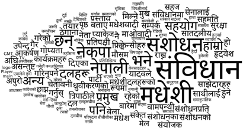
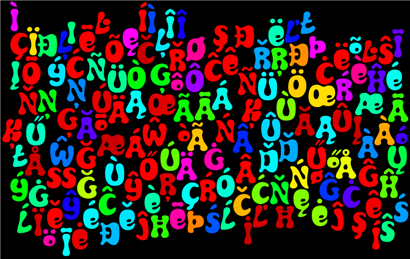

There is No Such Thing as Plain Text
Avoiding 文字化け (Mojibake)
Jonathan Feinberg
IBM Research, CUE
Thank you
I'm Jonathan Feinberg, and I'm a programmer upstairs here at the Center.
My title means that it's not enough to say that
some file is a "text file"; you have to be explicit about its encoding and character set.
Now, we're here to talk about text, but in our conversations we've
leapt over the question of what text really is, from the computer's
perspective. It turns out that representing text is not trivial,
which is why things are sometimes garbled in your emails. This garble
is called Mojibake, or so Wikipedia tells me.
I came to think about these when I made...
Where I'm Coming From


...the Wordle web site. When people asked me to support their
languages, I had to learn a lot about these things, very quickly.
This talk is basically the punch line of a long and
technical talk I like to give, called "Unicode for Smarties".
My point is not just to evangelize Unicode, but also to deliver
the message that an understanding of how text works in
computers is both important for the work we do and accessible.
Unfortunately, I can't possibly do that properly in 5 minutes.
So, for now, I'll have to settle for simply telling you what to do.
Do These Things
Use Unicode as your character set.
Use UTF-8 as the encoding for your text files.
Text in Computers
In order to represent written language in computer memory,
you need two things:
- A coded character set
- An encoding that turns code points into byte sequences and vice versa
Some Character Sets Are Better Than Others
Some character sets are better than others.
What makes one character set better than another? It has more
characters in it! For example, the default character set on
this computer--windows-1252--doesn't know anything about
non-latin alphabets.
Some Character Sets Are Better Than Others
You should use Unicode.
Unicode provides a universal coded character set.
"Universal" means that it contains all of the characters in all
of the world's written languages, including many dead scripts
and a good number of made-up ones.
Some Encodings Are Better Than Others
The reasons are entirely technical, and we don't have a lot
of time, but I'll try to at least convince you that the
reasons exist to prefer one encoding over another.
Some Encodings Are Better Than Others
Real-world example: Windows CP-932 encoding
This is the actual default encoding on Windows running in the
Japanese locale, so it's not some strawman, although this particular
example is, admittedly, pretty perverse.
The problem illustrated here is that there are sequences of
bytes that can mean a number of things, depending on
where you start. There are two problems with that. One,
if there's the slightest bit of corruption (a lost or garbled byte),
you can screw up a long section because there's no good way
to resynchronize. Related to that is the problem of "backing up"
one or two characters (or moving ahead) if you're parsing text.
You just can't figure out where you are.
Some Encodings Are Better Than Others
You should use UTF-8
In UTF-8, on the other hand, certain bit patterns are reserved for
certain functions, which I've represented as colors in this
slide. This makes UTF-8 robust in the face of corruption--you only
lose a single character per byte lost--and easy to resynchronize
in parsing--you only ever need to move a maximum of three bytes
in the stream to find a "start byte".
Some Encodings Are Better Than Others
There are other Unicode encodings, or "transformation formats",
defined, but we don't have time to explain why or how to choose
one. It's good enough to know that for most of what you want to
do with text, UTF-8 is excellent. And, remember, I said so.
You Have To Be Explicit
The "assumed" encodings for the popular programming languages
on the popular platforms are all Eurocentric, and are
mutually incompatible.
If you rely on the default encodings for various pieces of software,
you will lose data! I want you to keep data, and understand it.
There's No Reason Not To Use Unicode
Every web browser can correctly interpret and represent
all Unicode encodings (the UTF family).
All of your clients, your readers, the capitalists who are funding
your startups... they all have software that use Unicode.
There's No Reason Not To Use Unicode
- Java, Python, and Perl all support Unicode very well.
- (Ruby, not so well.)
- But you have to know what you're doing.
- But it's easy to learn.
I Can Go On For Hours About This Stuff
Jonathan Feinberg
jdf@us.ibm.com